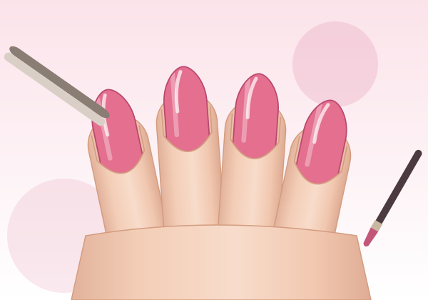

Corso completo · Base → Avanzato
Ricostruzione unghie, dalla teoria al banco di lavoro
Un percorso strutturato in moduli: anatomia, igiene, materiali (gel, acrilico, polygel), preparazione, tip, cartina, apex, limatura, refill, risoluzione dei problemi e professione. Ogni modulo ha illustrazioni tutorial, esercizi pratici con auto-valutazione e un quiz.

Il tuo progresso
I progressi sono salvati solo in questo browser.
Programma del corso
Come usare il corso
1 · Studia
Leggi le lezioni nell'ordine proposto e segnale come completate. Le illustrazioni mostrano ogni passaggio.
2 · Esercitati
Ripeti gli esercizi su tip da allenamento o mano finta, poi spunta i criteri di auto-valutazione.
3 · Verifica
Fai il quiz di ogni modulo e, alla fine, l'esame da 40 domande (soglia 80%).
4 · Attestato
Completate le lezioni e superato l'esame, scarica l'attestato di fine corso con il dettaglio di tutto ciò che hai svolto.
Il tuo attestato